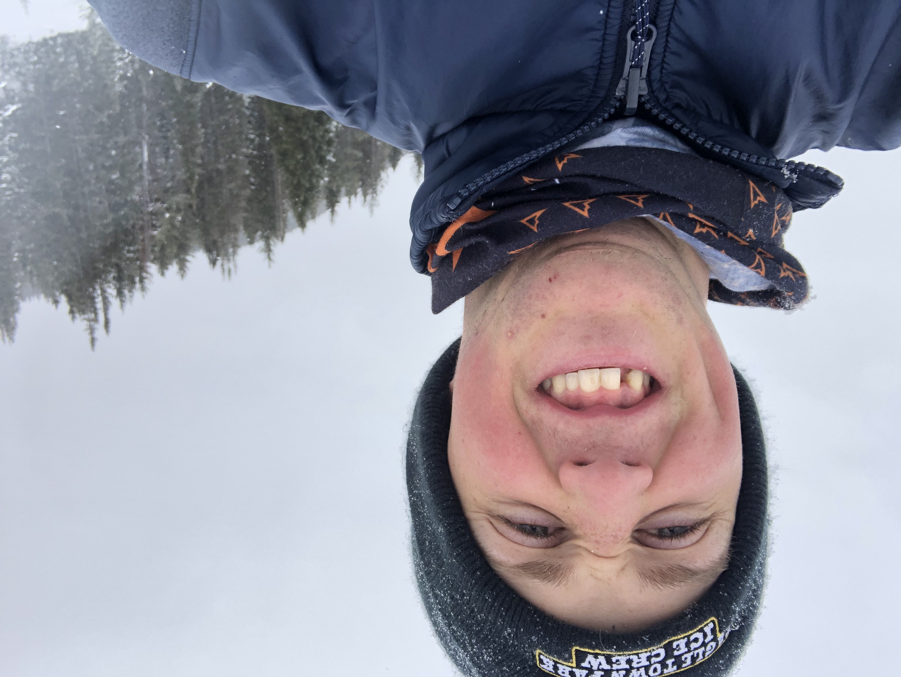
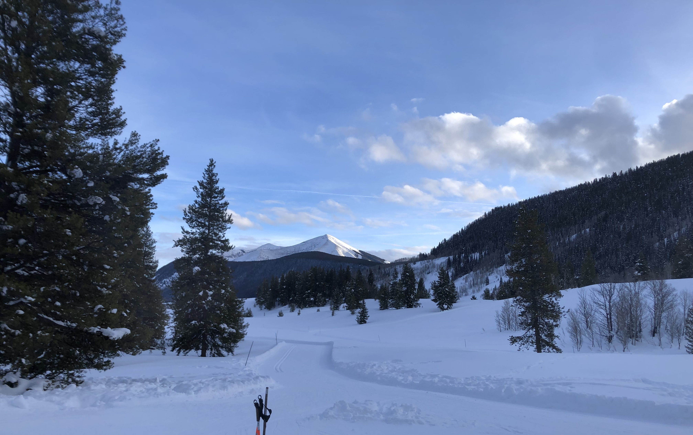

The day spring semester began I managed to lose a tooth. Thankfully, the tooth that I lost is fake; It was held in with ceramic. I managed to do this while eating some jerky. The interesting part of all this is that I've really only had 3 or so people comment on the fact that its missing. The moral of the story here is to avoid eating jerky if you have any teeth bonded with ceramic.

The missing tooth... :`(
Also, here's a nice picture I took of some mountains from the Meadows trail system in Crested Butte.

Looking back in the direction of Crested Butte
Click here to return to the short articles page.